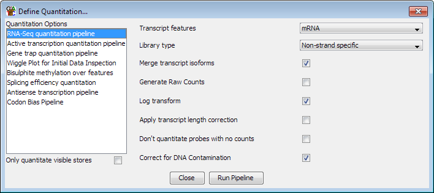

The Active transcription quantitation pipeline
The active transcription quantitation pipeline is very similar to the
RNA-Seq quantitation pipeline
except that it tries to specifically measure active transcription rather than
the standing pool of mRNA. To do this it bases its counts on reads falling
into introns rather than exons. All of the options for this pipeline mirror the
corresponding options in the RNA-Seq pipeline.

The pipeline generates a set of probes covering every transcript in the genome, but
then quantitates each of these based on the number of reads falling within the
introns of those transcripts - ignoring any reads found in exons. This method of
quantitation can only be achieved using this pipeline and cannot be performed using
the standard probe generation and quantitation tools. Transcripts with no introns
will be ignored by the pipeline.
The counts produced are by default corrected for the total number of sequences in
the dataset. Also by default they are log transformed to form an easier
distribution to work with. You can optionally correct for the length of the introns
in the transcripts to produce RPKM values.
Options
The options you can set for this pipeline are:
- The feature type to use for this analysis. This will default to mRNA if an mRNA
track exists in your genome, but can be changed to whichever transcript feature track
is appropriate
- The type of library you are quantitating. Some RNA-Seq libraries are strand specific
and in these cases the pipeline can ignore reads coming from the wrong strand. You can
also choose between strand specific libraries which produce reads on the same strand as
the feature or the opposing strand.
- Whether to merge the isoforms for each gene into a single measure. Using this option
relies on the transcripts using the standard Ensembl notation of gene-xxx (where xxx is
a number) to denote transcripts. The exons from all transcripts will be merged and a
single probe will be generated over the full extent of the gene.
- Whether to generate raw counts. If you are using this option to generate data to put
forward for statistical analysis by a count based method (eg DESeq, EdgeR etc), then you
will need completely raw uncorrected counts. Selecting this option disables all correction
and normalisation and produces raw read counts.
- Whether the results should be log2 transformed. Data analysis and visualisation of
RNA-Seq data is often easier when performed on a log scale. If this option is selected then
empty transcripts will be given a count of 0.9 bases (or 0.9 reads if read length correction
is applied). This count is applied before read length or total read count correction is applied.
- Whether to correct for the length of each transcript. If this option is selected then
the quantitated values are expressed per kilobase of introns. This option is only useful
if you need to compare expression levels between multiple transcripts in the same sample. If you
want to compare expression between different datasets then you should generally not select this
option since it will cause the error profile for your data, which is generally correlated with
the level of observation, to become confounded with the length of the introns - making it
harder to accurately identify differentially expressed transcripts.